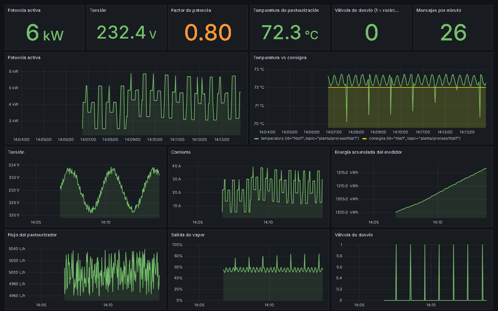

Los datos los genera el simulador (un medidor con cinco cargas y un pasteurizador con una falla de vapor periódica: la temperatura cae bajo 72 °C y la válvula de desvío recircula el producto).
cd proyectos/pipeline-mqtt-grafana docker compose up -d --build --wait powershell -File .\verificar.ps1
Abre http://localhost:3000 y espera 1 a 2 minutos. Para borrar todo: docker compose down -v.
planta/energia/medidor1
{"id":"medidor1","ts":1760000000,"v":229.8,"i":3.42,"p":742.1,"pf":0.95,"f":50.01,"e":123.456}
planta/proceso/htst1
{"id":"htst1","ts":1760000000,"temp":72.4,"sp":72,"flujo":5004,"desvio":0,"vapor":55.2}Código completo: proyectos/pipeline-mqtt-grafana (compose, configuraciones, simulador, tablero y script de verificación).